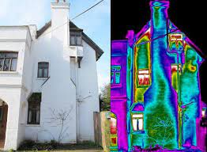

Gamma Rays
- Gamma rays have the shortest wavelengths and contain the most energy in the electromagnetic spectrum.
Gamma rays are small enough to pass through most solids and like X-rays they can even penetrate the human body.
Exposure to gamma rays can be harmful to the human body, but it is also used in medicine.
It’s used in radiotherapy which is a process where radiation is used to kill cancer cells.
X-Rays
X-Rays are small enough to penetrate many solids. This includes human tissue. X-rays are mainly for medical purposes In detecting damage to hard tissues like bone.
Ultraviolet Rays
Ultraviolet radiation, or UV radiation for short, contains more energy than visible light waves, and have enough energy to burn human skin. This is one of the types of energy emitted by the sun and it’s what causes sunburns. It also contains enough energy to kill certain microorganisms which is why it's sometimes used for sanitization purposes. UV radiation also promotes production of Vitamin D in humans.
Visible Light
This is the range of electromagnetic radiation that humans can sense with their eyes. This part of the spectrum is responsible for colour.
Infared Radiation
Infrared rays are waves that are invisible to humans but can be sensed as heat. Infrared detectors are responsible for detecting infrared waves and transferring it into an heat map. These images are known as thermograms.
Microwaves
Microwaves are used in Microwave ovens to heat up food. The energy causes the molecules to vibrate in place causing the food to heat up. Microwaves are also used for radars. Microwaves are sent out by transmitters and since they reflect like visible light the reflected waves can be focused by a dish and the speed of which the transmissions took to hit the object and back can be used to determine the location of aircraft, spacecraft and boats.

Radio Waves